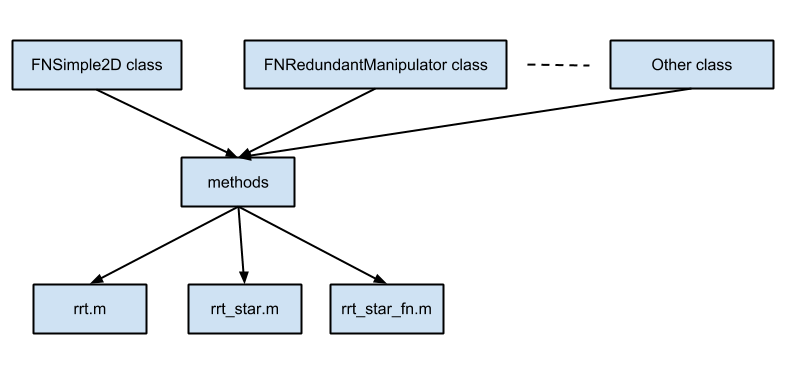

How to create new model for solving path/motion planning problem
| Please do not change anything in rrt.m, rrt_star.m and rrt_star_fn.m |
Contents
At the designing stage of the toolbox Object Oriented Approach employed to increase the generality of certain peaces of code.

This schematic figure shows how files relate.
Creating new model
rrt.m, rrt_star.m and rrt_star_fn.m contain all necessary code to properly run algorithms. In order to add new model, a developer should add new class with appropriate methods.
Methods to be implemented for RRT
- sample()
- nearest( new_node )
- steer( nearest_node_ind , new_node )
- obstacle_collision( new_node , nearest_node )
- insert_node( nearest_node , new_node )
- plot()
Methods to be implemented for RRT*
- sample()
- nearest( new_node )
- steer( nearest_node_ind , new_node )
- obstacle_collision( new_node , nearest_node )
- neighbors( new_node , nearest_node_ind )
- chooseParent( neighbors , nearest_node_ind , new_node )
- insert_node( min_node_ind , new_node )
- rewire( new_node_ind , neighbors , min_node_ind )
- plot()
Methods to be implemented for RRT*FN
- sample()
- nearest( new_node )
- steer( nearest_node_ind , new_node )
- obstacle_collision( new_node , nearest_node )
- neighbors( new_node , nearest_node_ind )
- chooseParent( neighbors , nearest_node_ind , new_node )
- reuse_node( min_node , new_node )
- insert_node( min_node_ind , new_node )
- rewire( new_node_ind , neighbors , min_node_ind )
- best_path_evaluate()
- forced_removal()
- plot()